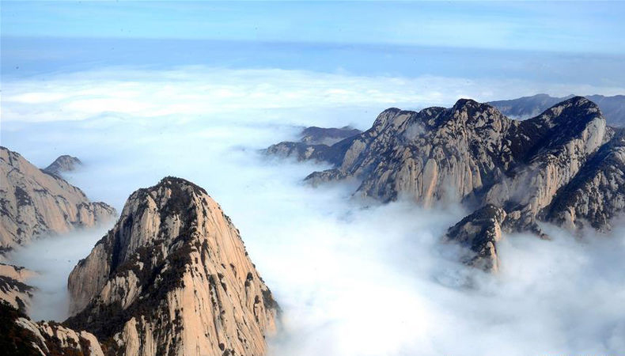

华山
华山（Mount Hua）古称“西岳”，雅称“太华山”，为中国著名的五岳之一，中华文明的发祥地，“中华”和“华夏”之“华”，就源于华山 。位于陕西省渭南市华阴市，在省会西安以东120千米处。南接秦岭，北瞰黄渭， 自古以来就有“奇险天下第一山”的说法。华山是第一批国家重点风景名胜区，国家AAAAA级旅游景区，全国重点文物保护单位，国家地质公园。
华山是中华民族的圣山。中华之“华”，源于华山，由此，华山有了“华夏之根”之称。这一成果首先被孙中山所引用，创立“中华民国”。据清代国学大师章太炎和历代专家学者考证：华夏民族最初形成并居住于 “华山之周”，名其国土曰华，其后人迹所至，遍及九州，华之名始广。
，比例协调适度，格调庄严古朴，是保存比较完好的楼阁式塔。在塔内可俯视西安古城。
华山是道教主流全真派圣地，为“第四洞天”，也是中国民间广泛崇奉的神祇，即西岳华山君神。共有72个半悬空洞，道观20余座，其中玉泉院、都龙庙、东道院、镇岳宫被列为全国重点道教宫观，有陈抟、郝大通、贺元希等著名的道教高人。
华山是神州九大观日处之一，观日处位于华山东峰（亦称朝阳峰），朝阳台为最佳地点。“中国黄河50景”之一。